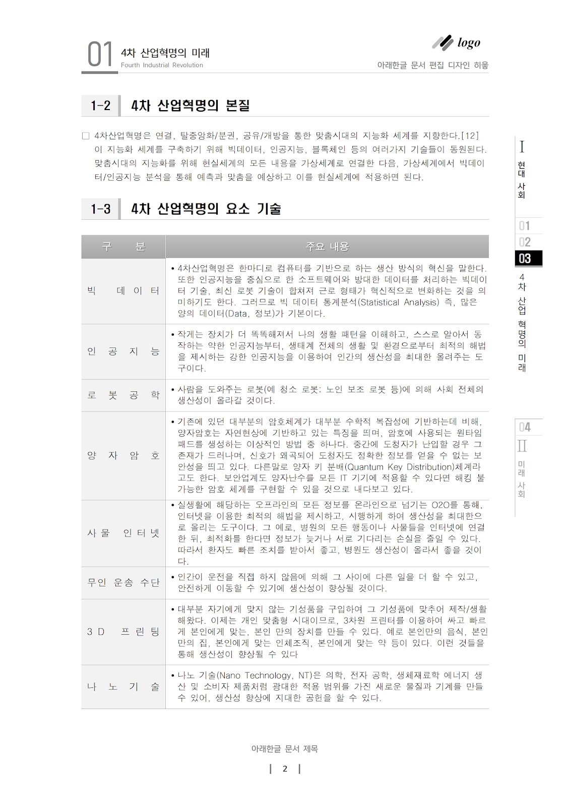
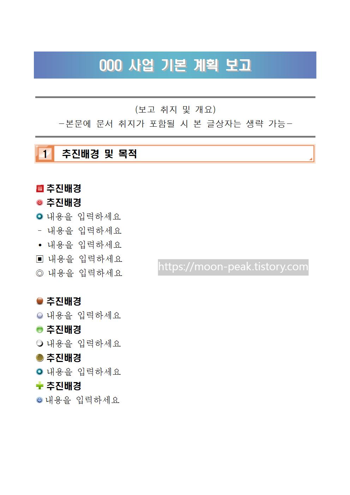
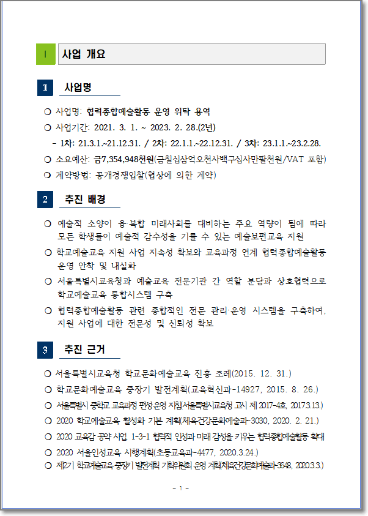
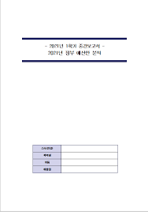
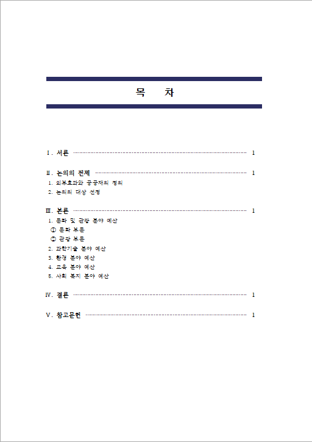
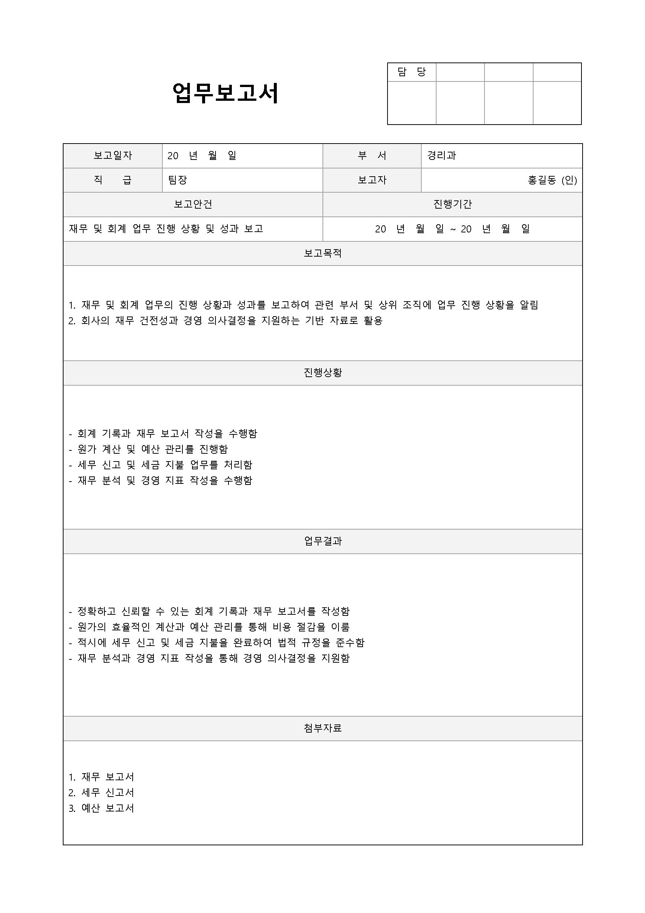

보고서 양식 선택
보고서에 적용할 양식을 선택해주세요.
2024년 상반기 업무 보고서
작성자:
홍길동 (총무과)
작성일:
2024-01-25
문서형식:
한글(HWP)

추천
표준 공문서 양식
공문서 표준 양식으로, 정부 부처 간 공식 문서 작성에 적합합니다.

인기
업무 보고서 양식
부서 내 업무 보고를 위한 깔끔한 디자인의 보고서 템플릿입니다.

브리핑 자료 양식
발표용 자료로 활용하기 좋은 시각적 요소가 강화된 템플릿입니다.

연구 보고서 양식
연구 결과를 체계적으로 정리할 수 있는 학술적인 템플릿입니다.

회의록 양식
회의 내용과 결과를 명확하게 기록할 수 있는 회의록 템플릿입니다.

제안서 양식
새로운 정책이나 사업을 제안하기 위한 구조화된 템플릿입니다.
표준 공문서 양식

템플릿 특징
- 공식 문서 표준 규격 준수
- 명확한 문단 구분과 가독성
- 공문번호 및 관련 참조 영역
- 결재 흐름 표시 영역
적합한 용도
- 부처 간 공식 문서 교환
- 결재가 필요한 공식 문서
- 정책 발표 및 안내 문서